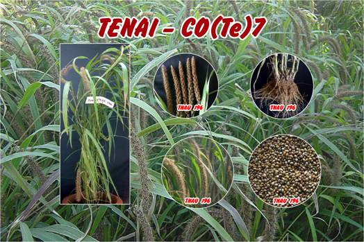
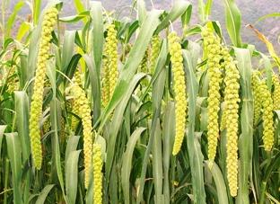
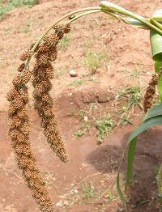
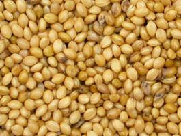

|
Foxtail millet (Tenai)– (Setaria italica)
Package of practices for Tenai

|  |
 |
 |
| Panicle |
Panicle |
Grain |
Season and Varieties
| Crop |
Districts grown |
| Tenai |
Dharmapuri, Krishnagiri, Vellore, Tiruvannamalai, Cuddalore, Villupuram, Salem, Namakkal, Erode, Coimbatore, Tiruchirapalli, Perambalur, Karur, Madurai, Theni, Tirunelveli and Thoothukudi. |
| District/Season |
Variety |
| Rainfed |
| a) June-July (Hill slopes of Coimbatore and Erode Districts) |
CO 6, CO (Te) 7 |
| b) September-October (Coimbatore and Southerndistricts) |
CO 6, CO (Te) 7 |
| Irrigated |
a) February-March
b) September-October |
CO 6, CO (Te) 7 |
| PARTICULARS |
CO 6 |
CO (Te) 7 |
| Parentage |
Hybrid derivative of CO 5 x ISE 301 |
CO 5 x ISE 248 |
| Duration (days) |
85-90 |
80-85 |
| Pigmentation |
green |
Greenish purple |
| Tillering ability |
High |
high |
| Panicles |
Long and drooping |
Long, compact |
| Grain Character |
Bold & Yellow |
yellow |
| Grain Yield (kg/ha) Straw |
1565
3.7 t/ha |
1855
5.1 t/ha |
| Special features |
Suitable for irrigated & rainfed conditions, good grain quality, rich in protein, fat and minerals than CO 5 |
Non lodging
High yielding |
Seeds and sowing:
For line planting |
: |
10kg/ha |
For sowing |
: |
12.5kg/ha for use of Gorru or seed drill is recommended. |
Seed treatment |
: |
Treat 1 kg of seeds with 2 g Thiram or
Carbendazim. |
Field preparation |
: |
Plough the field thoroughly using a small iron
plough or country plough to fine tilth. |
Fertilizer application |
: |
Apply basally
FYM/Compost 12.5 t/ha
Nitrogen 44 kg/ha
Phosphorus 22 kg/ha |
Spacing |
: |
For line planting 22 x 10 cm, for sowing 10 cm in between plants |
Weeding |
: |
First weeding on 15 th DAS and the second on 40th DAS |
Thinning |
: |
Before 20 DAS |
Plant protection |
: |
Generally no major problem of pests and diseases |
|